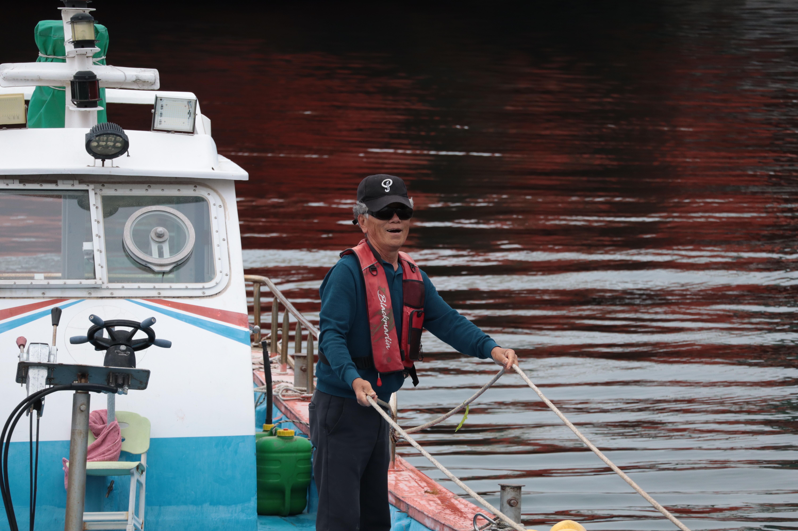
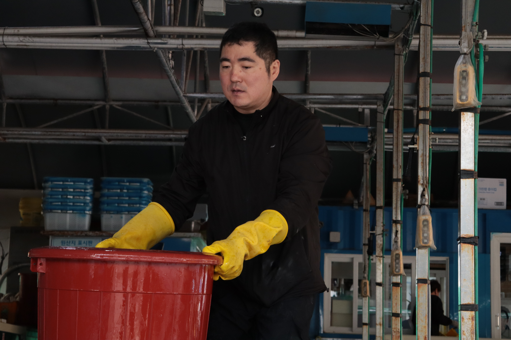

MY ROLE
- Storytelling & location research
- Contact with interviewees
- Realisation & lead multilingualism
- Subtitle translation Korean to French
- Concept & Poster Design
•
Documentary Website
•
On Location



A portrait documentary about making a living from the sea on the island of Geoje, South Korea, following the people whose daily life still depends on it. Through quiet, observational filmmaking, it follows the rhythms of a fishing community whose relationship with the sea has shaped generations, and asks what remains of that way of life today.

